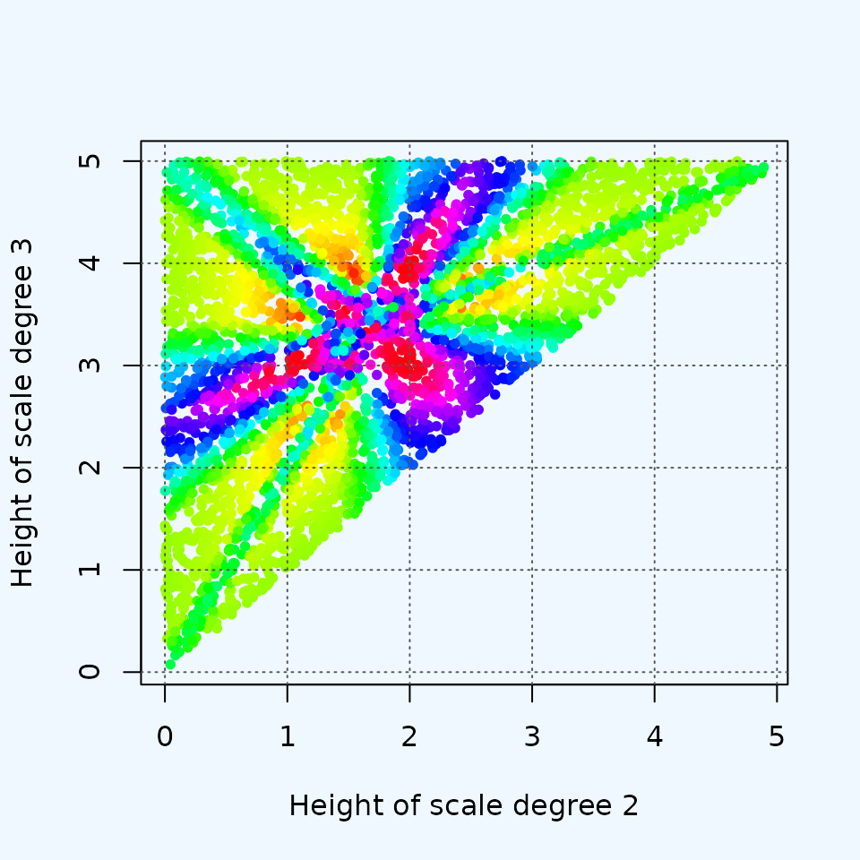

visualizing_higher_dimensions
visualizing_higher_dimensions.Rmdtesting plots
numpoints <- 4000
xs <- runif(numpoints, -4, 4)
ys <- runif(numpoints, -4, 4)
sets <- rbind(rep(0,numpoints), xs, ys)
sets <- apply(sets, 2, coord_from_edo)
ratios <- apply(sets, 2, ratio)
plot(xs, ys, col=hsv(ratios), pch=20)
did that work?